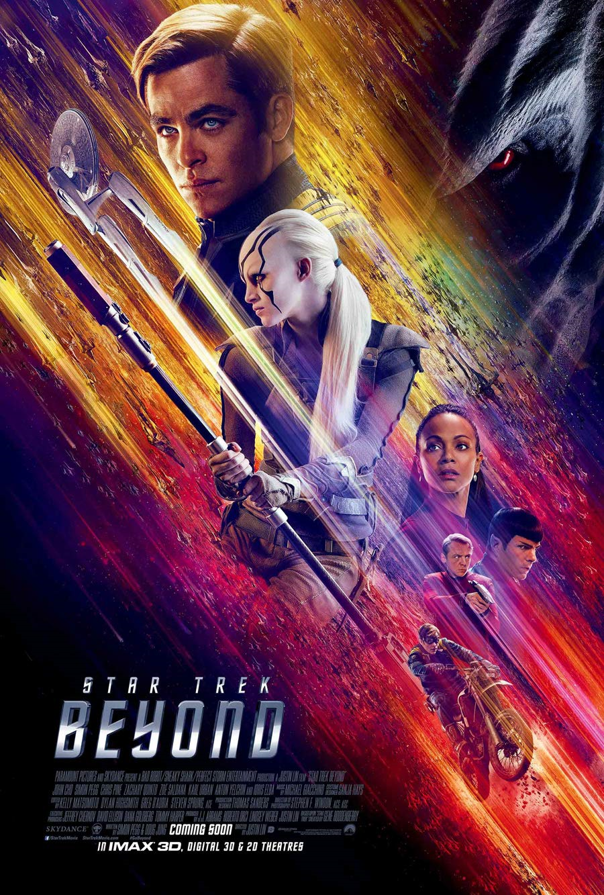

@c6reviews.
@c6reviews.Films
home
| Star Trek Beyond | |
|---|---|
|  | |
| Film number: | #13 |
| Release date: | July 22, 2016 |
| In-universe year: | Kelvin 2263 |
| Universe Timeline Go to full timeline ➡︎ | ||||
|---|---|---|---|---|
| Prime Timeline | ¦ | Kelvin Timeline | ||
| 2233 | James T. Kirk is born | ¦ | ❰❰ STAR TREK [2009] | Nero arrives from 2387 |
| 2234 | ¦ | ↑ | ||
| [20 intervening years] | ||||
| 2255 | ¦ | ↑ | ||
| 2256 | STAR TREK DISCOVERY (DIS) SEASONS 1 & 2 |
¦ | ↑ | |
| 2257 | ¦ | ↑ | ||
| 2258 | ¦ | STAR TREK [2009] | Spock arrives from 2387 | |
| 2259 | STAR TREK STRANGE NEW WORLDS (SNW) |
¦ | INTO DARKNESS | ↑ ↑ |
| 2260 | ¦ | 5-year mission begins | ↑ ↑ | |
| 2261 | ¦ | ↑ ↑ | ||
| 2262 | ¦ | ↑ ↑ | ||
| 2263 | ¦ | BEYOND | ↑ ↑ | |
| 2264 | ¦ | ↑ ↑ | ||
| 2265 | ¦ | ↑ ↑ | ||
| 2266 | ¦ | ↑ ↑ | ||
| 2267 | ¦ | ↑ ↑ | ||
| 2268 | ¦ | ↑ ↑ | ||
| 2269 | ¦ | ↑ ↑ | ||
| 2270 | ¦ | ↑ ↑ | ||
| 2271 | ¦ | ↑ ↑ | ||
| [112 intervening years] | ||||
| 2384 | ¦ | ↑ ↑ | ||
| 2385 | Rogue Synth Attack on Mars (April 5) | ¦ | ↑ ↑ | |
| 2386 | ¦ | ↑ ↑ | ||
| 2387 | Romulus Destroyed by Supernova | ➜ | Nero and Spock thrown back in time to 2233 and 2258 | |
| 2388 | ¦ | |||
 Star Trek Beyond
Star Trek Beyond
Star Trek Beyond is the thirteenth Star Trek film, and it's the third of three films produced by J.J. Abrams which take place in the Kelvin Timeline. One notable difference is that the first two films were also directed by Abrams, but this film was directed by Justin Lin.
When we left our heroes in the previous film, they were just about to embark on their 5-year mission. This film takes place in their third year, and Kirk is feeling a little unmotivated. In fact, he makes a joke about his life feeling “episodic” which is, of course, a nod to the original TV series with a different story each week. He's about to take a vice admiral position for a change of pace, but first he's sent on a rescue mission into an uncharted nebula. There, he finds a fierce villain lying in wait, with a plot to destroy the Enterprise, Starfleet, and the entire Federation.
The Kelvin Timeline is separate from Star Trek's Prime Timeline, and these stories can be enjoyed at any point in your Trek journey without really needing any prior context. This is, however, the third film in the Kelvin trilogy, so you should definitely watch the first two films, Star Trek [2009] and Star Trek Into Darkness, before this one.
| Suggested Prerequisite Watch List | |||
| Series | Episode | Title | Description / Relevance |
|---|---|---|---|
| FILM | #11 | Star Trek [2009] | This is the first Kelvin Timeline film. |
| FILM | #12 | Star Trek Into Darkness | This is the second Kelvin Timeline film. |
One-sentence summary: The antagonist, Krall, blows up the Enterprise because he wants some little artifact that will help him blow up the rest of the Federation, too.
I have a confession to make. I was so disinterested in the Kelvin films at this point that I honestly didn't even know that this film had come out. It wasn't until several months later that I discovered it and laughed at the idea that I had completely missed the release of a new Star Trek film. It had been out of theaters for a while at that point, so I rented it from Redbox, which was still a thing in 2016. In preparation to watch it again here in 2025, I found that I have another confession to make: I couldn't even remember what this movie was about. Frankly, the only thing that I could recall was Kirk and the bad guy floating around and fighting in the ridiculous gravity-defying final battle. I'm not saying the movie was a flop, I'm just saying that it probably wasn't a good sign that it wasn't terribly memorable for me. After watching it again, I have to ask, why is it called “Beyond”? Beyond... what? What does “beyond” have to do with this story?
So, the Enterprise is destroyed at the hands of a ruthless enemy. Obviously, the destruction of the Enterprise in this movie doesn't have even close to the same impact as it did in the Prime Timeline's Star Trek III: The Search for Spock. (Oh, uh, spoilers for that 1984 film, I guess... sorry!) In that case, the original Enterprise NCC‑1701 had been with us through three seasons of The Original Series, two seasons of The Animated Series, and two feature films. It was, at the time, the only Starfleet vessel we had followed on adventures in the Trek universe. The ship was just as much of a beloved character in the franchise as Kirk or Spock, and seeing it destroyed in the original third film was somewhat devastating. Here, in Beyond, they did it just because it was the third film again, I guess. Since we've only seen the ship in two previous movies, it isn't the same... especially since the time-lapse construction of the Enterprise‑A – though it was sort of neat to watch – was also a bit shrug-worthy, in a way. It sort of cheapens the loss of the original when the new one is already operational by the time the credits roll.
I will say that this feels more like a Star Trek film than the previous two did. The sort of slower start to the film before the real conflict is introduced gave us more time to appreciate our characters and how they interact with each other. I also appreciate how they reconnected to the Prime Timeline canon by bringing in a story from before the Kelvin Timeline was created. Overall, I think the change in directors was also a benefit to this trilogy. I think this film would have been a good jumping-off point for a fourth Kelvin Timeline story; it's a shame that we won't be getting one (at least, not any time soon).
- After beaming back from the planet in the opener, Kirk says “I ripped my shirt again.” This is a tongue-in-cheek reference to how William Shatner's Kirk always seemed to rip his shirt open during any sort of fight in The Original Series.
- Early in the film, Spock is informed of the death of his older, Prime-Timeline counterpart. This news pays respects to actor Leonard Nimoy (the original Spock), who passed away at age 83 on February 27, 2015, a year prior to this film being released.
- Jaylah has been hiding out in the USS Franklin NX‑326, Earth's first Warp 4 ship. This means the ship was launched between 2145 and 2151 in the Prime Timeline, since the Kelvin Timeline didn't begin until 2233. The Franklin's launch would have taken place just before the series Star Trek: Enterprise. See it on the full timeline ❱
- There are several more references to Star Trek: Enterprise as they discuss the technology on board the Franklin (e.g. polarized hull plating, spatial torpedoes, and plasma cannons), as well as the mentions of the Xindi (a group of six species first introduced in Enterprise) and the MACOs (part of the United Earth Military in the same era as Enterprise).
- Scotty says one of the theories about how the USS Franklin got out so far is that the ship was “captured by a giant green space hand”. This is a quick reference to TOS 2x04: Who Mourns for Adonais? where a literal giant green hand captures the Enterprise.
- The photo that Spock retrieves from Spock-Prime's effects is of the original, Prime Timeline crew of the Enterprise.
👍 Prologue — The prologue before the conflict is introduced actually feels like a real Star Trek story.
👎 Throwaway LGBTQ+ representation — Briefly, we see that Sulu has a husband. On the one hand, my first thought was something like, “If you're going to have a gay character, then you need to actually do something with them, and somehow make it part of the story. Don't just throw in 15 seconds of ‘Also, I'm gay!’ and then never speak of it again.” But on the other hand, my next thought was, “Well, then again, maybe not making a big deal out of it is actually the right idea. Maybe it sends an important message of its own that Sulu's sexuality isn't given a spotlight and isn't treated like something that needs to be his entire personality or given a major part of the story.” Ultimately, though, the original Sulu actor George Takei – who is gay – did not agree with this portrayal of his character, so I'm going to have to side with him.
👍 Jaylah — Sofia Boutella's character definitely has a positive impact on the film.
👎 Typical Antagonist Blunder — Uhura and Sulu escape from captivity, but it isn't long before Krall's guards catch them. Instead of putting them back in captivity or killing them or something, Krall tells them exactly what his evil plans entail so that they can start formulating a plan to thwart him.
👍 Motorcycle Jailbreak — You know what? I'm giving the whole motorcycle-jailbreak-rescue-escape-fighting scene a thumbs up. I can get on board with it. Ignoring the fact that the motorcycle on the Franklin was suspiciously convenient, the scene was actually kind of fun. I'll be giving the final boss battle a thumbs down, so this one is definitely better by comparison.
🤷♂️ The Big Reveal — Uh, spoilers... we find out that Krall is actually the former captain of the Franklin at about 1 hour and 38 minutes into the movie. That leaves barely 15 minutes left in the movie to do anything with that information. Does it add anything to the film? I say, no, not really, because there's not enough time to add enough back story to actually make the revelation meaningful.
👎 Final Boss Battle — It's too much, to the point where it just becomes silly. Wonky gravity thingy at the center of the sphere, millions of lives at stake, four random levers that open a "maintenance hatch", flying around untethered, yelling, punching, running, jumping... and boy oh boy, if only this were a sci-fi movie where we had transporter technology, then we could just beam –– oh never mind.

- Krall's swarming “bees” are highly maneuverable and seem to be able to avoid torpedoes by quickly escaping their flightpath, both in the initial fight with the Enterprise and the later attack on the Yorktown base. It seems to me that torpedoes wouldn't need to actually impact a ship in order to explode. They could be fairly easily programmed to fly into the middle of the swarm and detonate, taking out plenty of those tiny ships.
- Huh, other than that... believe it or not... I can't find much else to nitpick. Sure, there are moments that stretch one's suspension of disbelief, but overall I think they did a pretty good job of not having too many obvious mistakes to complain about.
- “If I may adopt a parlance with which you are familiar, I can confirm your theory to be horse-s***.” — Spock
- “I like the beats and shouting!” — Jaylah
- “My wee granny used to say, ‘Ya cannae break a stick in a bundle.’” — Scotty
- “Damn it, Jim, I'm a doctor, not a fu–” — Bones, beamed away before he could finish his sentence.
| My rating: | 5 | FINAL SCORE 6.2 |
|
| Ex Astris Scientia rating: | 5 | ||
| Rotten Tomatoes “Tomatometer”: | 8.6 | ||
| Normalized IMDb rating: | 7.2 | ||
| Marginally better than the previous movie. |
Prime Timeline counterparts
This is the last of the three movies set in the Kelvin Timeline. If you want to see the original cast in the Prime Timeline, maybe you want to head back to the classics and start with Star Trek: The Motion Picture.
Next movie
The next movie to be released was Star Trek: Section 31. It takes place about 60 years after this one, in the Prime Timeline, with entirely different characters and an entirely unrelated story.